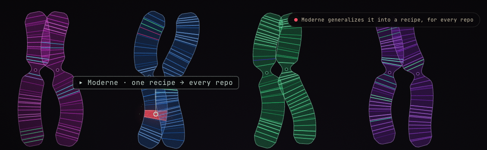

Copy this page's full design system — palette, tokens, type & components — and hand it to Claude.
This is a test page for the color palette, based on the product website. Use the toggle in the top right to switch between light and dark mode and see how each color behaves in both. From here we can start applying the changes across the documentation and the platform.
We sequence every repo into a Lossless Semantic Tree — a compiler-accurate model that delivers certainty, not probability. No more reading between the lines, because we've resolved them.
Moderne gives humans and agents deterministic tools to drive code change accurately and at scale whether across a single repo or 100,000 of them.

Each “strand” consists of a bright primary color on top and a deep companion shade underneath. Rather than generating darker versions algorithmically, each pair has been chosen to feel balanced and visually intentional.
| Strand | Bright | Deep |
|---|---|---|
| Lime | #C7E84B | #4F5A12 |
| Green | #30F284 | #1D5937 |
| Teal | #25D0C0 | #0E4A45 |
| Blue | #3E7BF6 | #16306B |
| Violet | #9D5BE8 | #3F1340 |
| Magenta | #E6399B | #7A1E52 |
Instead of relying on one color with varying opacity or automatically darkening it, each strand provides two intentional values. This keeps the color relationships consistent across different contexts.
Interactive elements, fills, highlights, buttons.
Text on bright backgrounds, charts, dark themes, emphasis, borders.
The note in the top-right of the palette suggests this is one section of a larger set: bright = vivid, energetic colors; deep = darker companion colors; 8 pairs = the complete palette likely contains eight color families, although only six are shown here.
This palette feels intentionally: